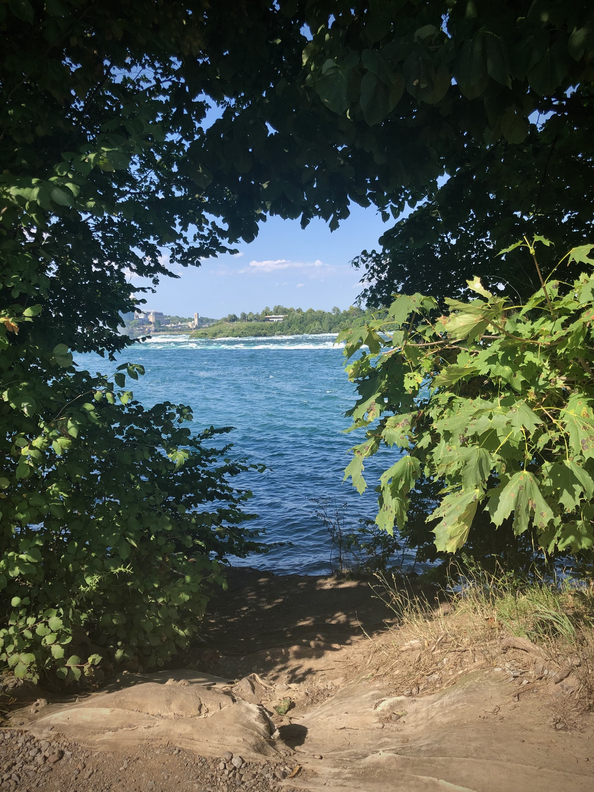
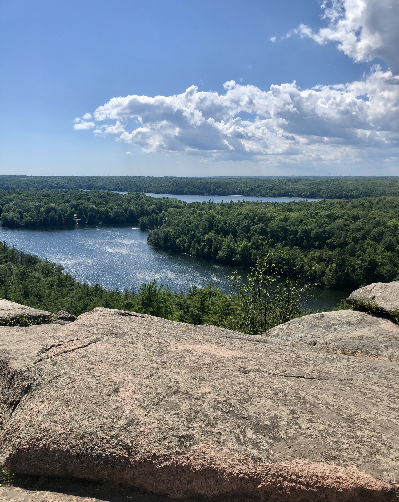
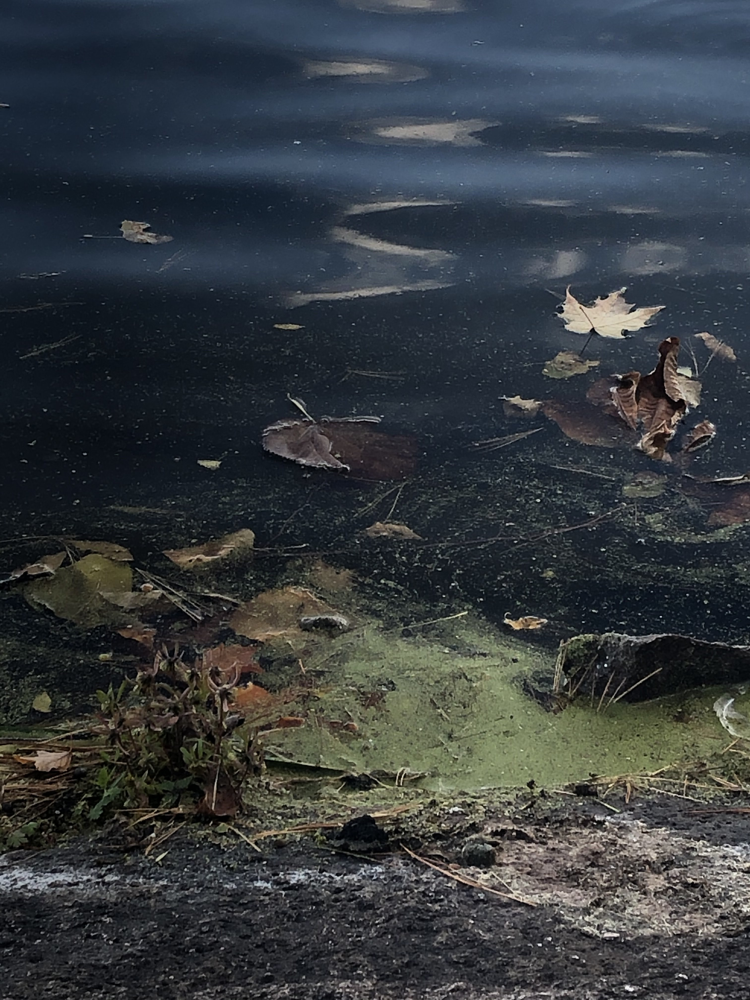
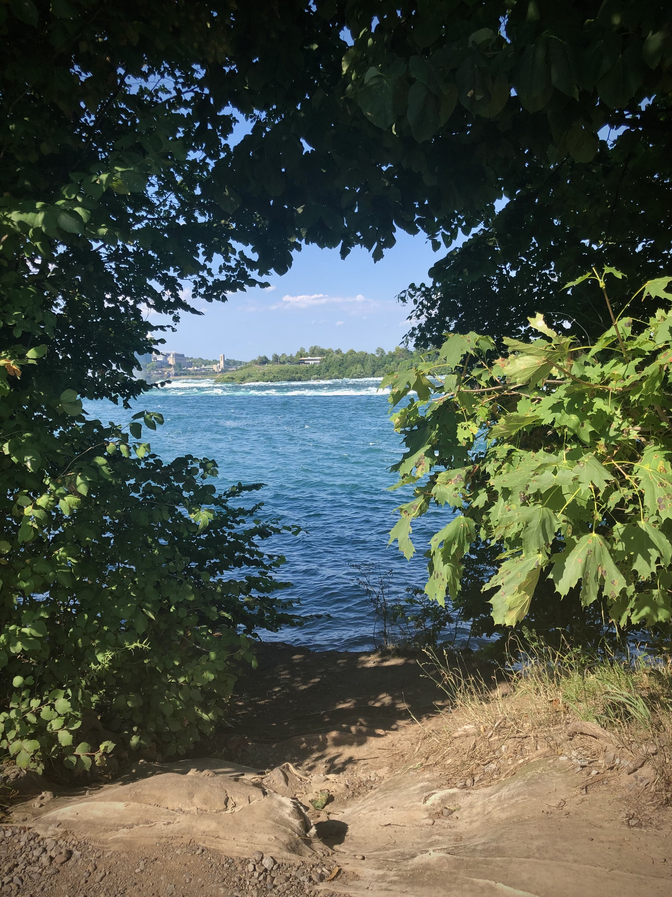
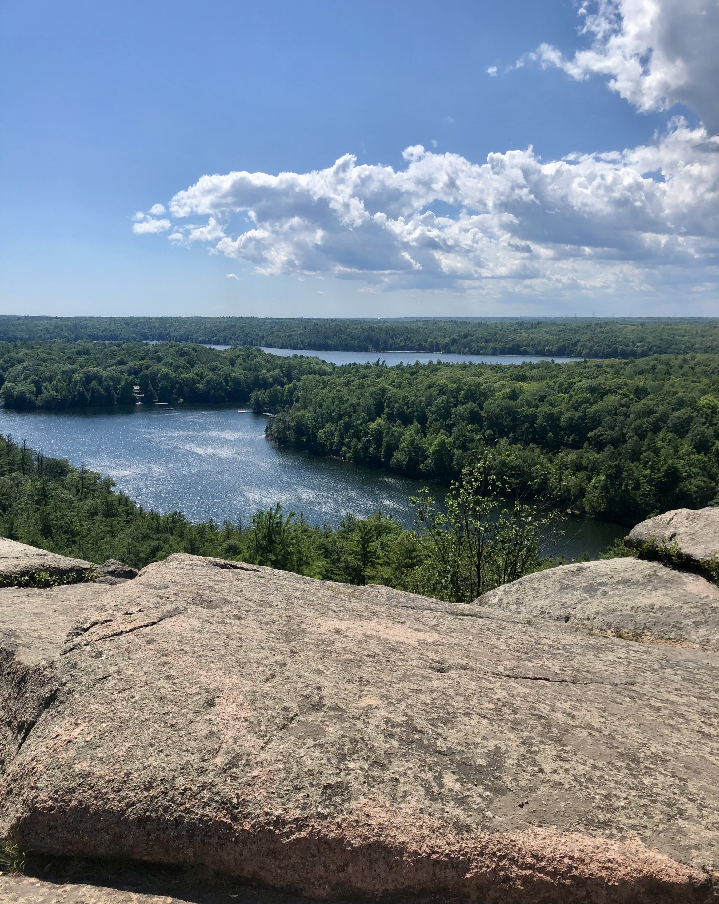
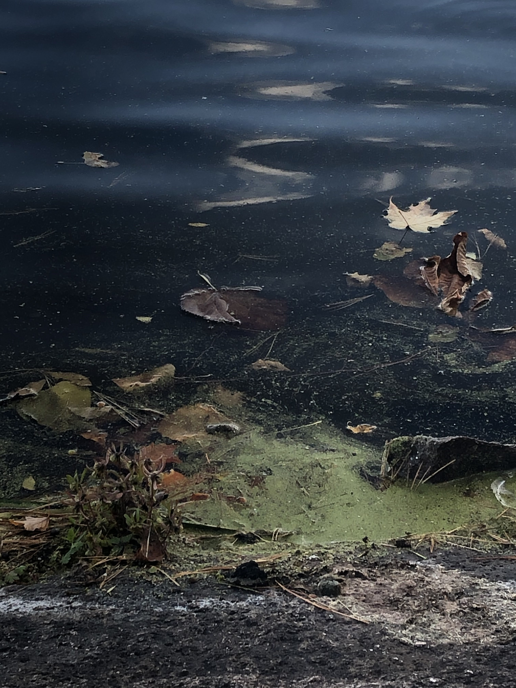
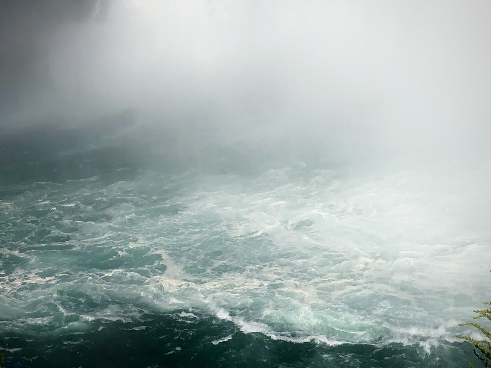

The wild waters collection has always been one of my favourites. I have always been fascinated by both the way it flows and looks. Despite this, I can never seem to take good pictures of land and water in the same image... I'm still really proud of these pictures though!
 




 